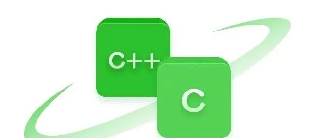

1：关于临时端口号
临时端口号（Ephemeral Port Number），又称为短暂端口号，是由网络通信中的客户端在发起连接时动态分配的端口号。这些端口号通常在传输控制协议（TCP）或用户数据报协议（UDP）会话中使用，用于客户端与服务器之间的通信。
在 TCP 或 UDP 通信中，每个连接都是由四元组来唯一标识的，包括源 IP 地址、源端口号、目标 IP 地址和目标端口号。当客户端应用程序需要与服务器建立连接时，操作系统会从临时端口号范围内分配一个未被使用的端口号作为源端口号。这个端口号在连接期间被占用，一旦连接关闭，这个端口号就可以被其他连接重新使用。
在大多数基于 UNIX 和 Linux 的操作系统中，临时端口号的范围通常可以通过 net.ipv4.ip_local_port_range 内核参数来设置。这个参数定义了本地端口号的最低值和最高值。例如，在 Linux 系统中，这个参数的默认值可能是：
net.ipv4.ip_local_port_range = 32768 61000但是在 Windows 系统中有点不一样：
在 Windows 操作系统中，临时端口号的分配通常遵循以下规则：
- 对于 TCP 和 UDP，Windows Vista 及以后版本默认的临时端口范围是 49152 到 65535
- Windows XP 及更早版本，默认范围是 1024 到 5000，从 Windows Vista 起才调整为 49152～65535，可以用
netsh int ipv4 show dynamicport tcp命令查看当前范围
临时端口号:(一般情况) Linux系统：32768 61000 Windows系统：49152 655352：客户端端口如何确定？什么时候确定？
在 TCP 连接的初始阶段，客户端必须选择一个端口号，用以向服务器发起连接请求。那么在 Linux 操作系统中，客户端是如何决定使用哪个端口的呢？深入了解端口选择机制，对于解决许多网络问题至关重要。
int main() {
fd = socket(AF_INET, SOCK_STREAM, 0);
connect(fd, ...);
...
}客户端在执行 connect() 函数的时候，会在内核里随机选择一个端口，然后向服务端发起 SYN 报文，并与其进行三次握手。如果在这之前显式调用了 bind() 绑定固定端口，内核就不会再随机分配；不过客户端一般不建议这么做，容易引起端口冲突。
在内核当中调用的函数是 inet_hash_connect()
//file: net/ipv4/tcp_ipv4.c
int tcp_v4_connect(struct sock *sk, struct sockaddr *uaddr, int addr_len)
{
//设置 socket 状态为 TCP_SYN_SENT
tcp_set_state(sk, TCP_SYN_SENT);
//动态选择一个端口
err = inet_hash_connect(&tcp_death_row, sk);
//函数用来根据 sk 中的信息，构建一个完整的 SYN 报文，并将它发送出去。
err = tcp_connect(sk);
}再看下 __inet_hash_connect() 的源码：
//file:net/ipv4/inet_hashtables.c
int __inet_hash_connect(...)
{
//是否绑定过端口
const unsigned short snum = inet_sk(sk)->inet_num;
//获取本地端口配置
inet_get_local_port_range(&low, &high);
remaining = (high - low) + 1;
if (!snum) {
//遍历查找
for (i = 1; i <= remaining; i++) {
port = low + (i + offset) % remaining;
...
}
}
}注意 inet_get_local_port_range() 函数，这个函数读取的是内核参数 net.ipv4.ip_local_port_range。
net.ipv4.ip_local_port_range 的默认值是 32768 61000，意味着端口总可用的数量是 61000 - 32768 = 28232 个。但是可以修改这个内核参数。
3：客户端已经使用了某个端口，还可以继续使用这个端口发起连接吗？
之前写过一篇文章，讨论一台电脑最多可以启动多少客户端去连接服务器。那里的“连接服务器”是指特定 IP+端口 的服务器，也就是说目标 IP 和目标端口是确定的。如果是这种情况，就不能继续使用这个端口。
但是如果目标 IP 和目标端口发生了变化，是可以继续使用这个端口发起连接的。
原理：
TCP 连接是通过一个四元组（源 IP 地址，源端口号，目标 IP 地址，目标端口号）来唯一标识的。因此，只要这个四元组中的任何一个元素不同，就代表着不同的 TCP 连接。例如，如果客户端已经使用端口号 32768 与服务器 A 建立了连接，那么客户端同样可以使用这个端口号 32768 来与服务器 B 建立另一个连接。这是因为操作系统内核是根据整个四元组信息来识别 TCP 连接的，而不会因为客户端端口号相同就导致连接之间的冲突（四元组唯一标识连接的更多讨论，可以看本站的《三次握手与四次挥手》一文）。
192.168.1.9 32768 192.168.1.110 10086
192.168.1.9 32768 192.168.1.110 10087上面两个连接是没有问题的，因为四元组的目的端口是不一样的。
如果客户端都是与不同的服务器地址建立连接，那么即使客户端端口资源只有几万个，理论上客户端是可以发起百万级连接的。
4：如何解决客户端 TIME_WAIT 连接过多的问题？
关于 TIME_WAIT 状态本身的来龙去脉，可以先看本站的《TIME_WAIT 状态详解》，下面直接给出几种缓解手段。更完整的一次线上实战，可以看本站的《从一次线上经历谈 TIME_WAIT》。
4.1：调整内核参数
net.ipv4.tcp_tw_reuse：设置为 1，允许处于 TIME_WAIT 状态的 socket 被重新用于新的出站连接，前提是连接双方都开启了 TCP 时间戳选项（net.ipv4.tcp_timestamps = 1，该值默认开启）。
net.ipv4.tcp_max_tw_buckets：设置一个合适的值，限制系统同时保持 TIME_WAIT 状态的最大连接数。如果超过这个值，系统将直接清除多余的 TIME_WAIT 连接。
4.2：缩短 FIN_WAIT_2 超时
net.ipv4.tcp_fin_timeout：减小这个值可以缩短 FIN_WAIT_2 状态的持续时间，让这一状态的连接更快释放资源。注意，它并不影响 TIME_WAIT 状态本身固定的 60 秒时长，只是从整体上缓解端口和资源的占用压力。
4.3：增大 ephemeral 端口范围
通过设置 net.ipv4.ip_local_port_range 参数，增大客户端可用的 ephemeral 端口范围。
net.ipv4.tcp_tw_reuse这个内核参数主要影响客户端，它允许客户端在处于 TIME_WAIT 状态时重新使用同一个端口。